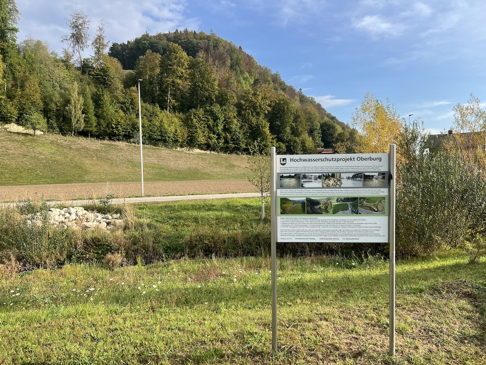
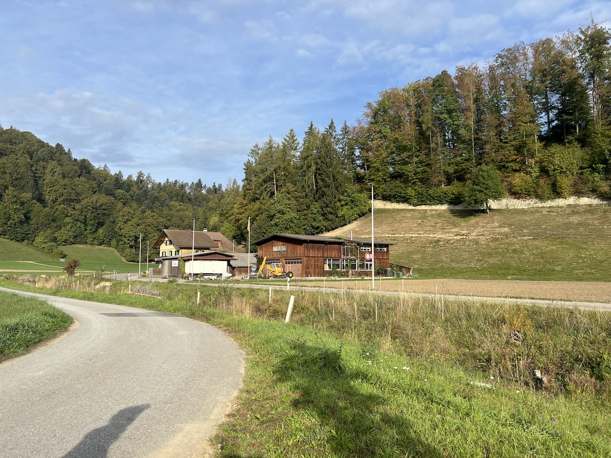

Darum geht's
Ein Bach sammelt das Wasser aus seiner ganzen Umgebung. Das bedeudet, dass alles was auf den Feldern im Einzugsgebiet passiert, früher oder später im Wasser landet. Die Agrarökologie beleuchtet diese Zusammenhänge und sucht nach nachhaltigen Lösungen.
Was ist Agrarökologie?
Agrarökologie betrachtet Landwirtschaft und Ernährung als ein zusammenhängendes System aus Pflanzen, Tieren, Menschen und Umwelt. Ziel ist es, Lebensmittel so herzustellen, dass die Natur geschützt wird und alle mitbestimmen können, was auf ihren Teller kommt. Sie ist Wissenschaft, Praxis und gesellschaftliche Bewegung zugleich. Ein Patentrezept gibt es nicht: Jede Region findet ihre eigenen Lösungen.
Die Welternährungsorganisation FAO fasst Agrarökologie in zehn Elementen zusammen. Die grünen betreffen vor allem die Natur, die weissen vor allem die Gesellschaft:
Quelle: FAO, The 10 Elements of Agroecology, eigene Übersetzung
Der Bach zeigt, wie eng Landwirtschaft und Natur verbunden sind: Was auf den Feldern geschieht, landet früher oder später im Wasser. Achte auf den Uferstreifen: Wie breit ist er? Was wächst dort?
Der Chrouchtalbach: Schutz und neues Leben
Bei starkem Regen fliessen der Chrouchtalbach und der Luterbach mitten durch Oberburg. Die Unwetter von 1987 und 2000 verursachten Schäden in zweistelliger Millionenhöhe. Seither wurde der Hochwasserschutz Schritt für Schritt ausgebaut:
- 1997 entstand im Unterbärgetal ein Rückhaltebecken (Polder), das den Chrouchtalbach bei Hochwasser bremst.
- Am Luterbach staut ein 11,5 Meter hoher Damm bei Hochwasser bis zu 163 000 m³ Wasser zurück. Im Juli 2021 hat er seine erste Bewährungsprobe bestanden.
- Gleichzeitig wurden der Chrouchtalbach, der Luterbach und kleinere Gräben revitalisiert, also wieder naturnäher gestaltet. Am Chrouchtalbach wurden 2025 rund 560 Meter umgestaltet.

Die Landwirtschaft macht Platz
Für Damm und Bach brauchte es Land. In einer Landumlegung wurden rund 95 Hektaren neu verteilt, beteiligt waren 42 Grundeigentümerinnen und -eigentümer und 10 Landwirtschaftsbetriebe. Ihre grosse Bereitschaft erleichterte die Verhandlungen. Gleichzeitig wurden Feldwege, Velo- und Wanderverbindungen verbessert.

Ein paar Zahlen zum Staunen
des rund 65 000 km langen Schweizer Gewässernetzes sind kleine Bäche wie der Chrouchtalbach.
Quelle: BAFU / Aqua & GasBäche und Flüsse sollen in der Schweiz bis 2090 revitalisiert werden. Erst rund 4 % davon sind geschafft.
Quelle: BAFUuntersuchten kleinen Bächen in Landwirtschaftsgebieten überschritten die Qualitätskriterien für Pflanzenschutzmittel.
Quelle: Eawag / Oekotoxzentrum, 2019breit muss der Pufferstreifen entlang von Gewässern auf Betrieben mit Direktzahlungen (ÖLN) sein. Keine Pflanzenschutzmittel, auf den ersten 3 Metern kein Dünger.
Quelle: Agridea, Merkblatt PufferstreifenWie kommt das Feld in den Bach?
Was hilft: breite, bewachsene Uferstreifen, Hecken und Ufergehölze, bedeckte Böden, weniger und gezielter eingesetzte Pflanzenschutzmittel, oder ganz darauf zu verzichten wie im Biolandbau.
Was hat das mit Agrarökologie zu tun?
- Synergien: Hochwasserschutz, Natur und Landwirtschaft wurden hier in einem Projekt zusammen geplant statt gegeneinander.
- Vielfalt: Ein naturnaher Bach mit Kies, Steinen, Pflanzen und Schatten bietet viel mehr Tieren Lebensraum als ein Kanal.
- Widerstandsfähigkeit: Bäche mit Raum können Hochwasser besser aufnehmen. Das schützt Dörfer, aber auch Felder.
- Verantwortungsvolle Steuerung: Gemeinde, Grundeigentümer und Bauernfamilien haben gemeinsam entschieden, wie das Land genutzt wird.
Frage: Warum lassen viele Betriebe entlang von Gewässern einen Streifen ungedüngt?
Ein bewachsener Pufferstreifen hält Erde, Dünger und Pflanzenschutzmittel zurück, bevor sie ins Wasser gelangen, und bietet Lebensraum für Insekten und andere Tiere. Für Betriebe mit Direktzahlungen ist ein 6 Meter breiter Streifen entlang von Gewässern Pflicht.
Frage: Warum wurden Hochwasserschutz und Revitalisierung hier gemeinsam geplant?
Ein Damm greift stark in die Natur ein. Mit der Revitalisierung wurde das wieder ausgeglichen, sodass das Projekt für die Natur insgesamt positiv ausfällt. Zudem erhielt das Projekt dadurch höhere Beiträge von Bund und Kanton.
Bleib am Ufer und schau genau hin: Fliesst das Wasser überall gleich schnell? Wo gibt es Schatten, wo Kies, wo ruhige Stellen? Jede dieser Stellen ist ein eigener Lebensraum. Bitte das Ufer und die frisch gepflanzten Sträucher nicht betreten.